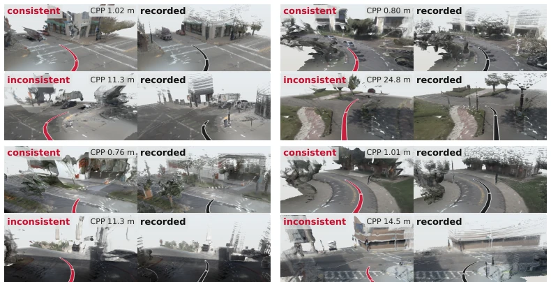
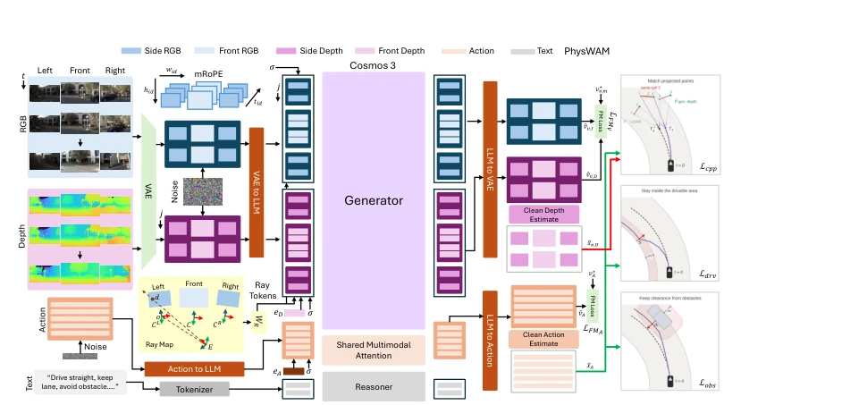
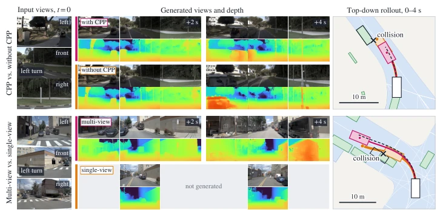
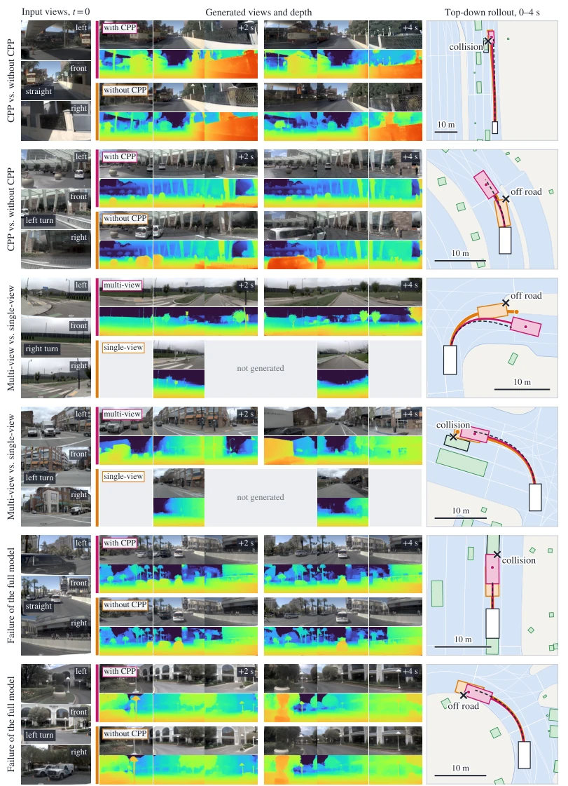

PhysWAM 试图给自动驾驶世界模型注入“物理灵魂”，核心大招是 Coupled Point Projection (CPP)。这招挺聪明，把生成的深度和运动投影到3D空间，跟LiDAR真值硬刚，强迫模型别瞎编几何关系。不过，这“物理一致性”其实是拿LiDAR当监督信号，训练时离不了真值，算不算真正的自监督？还有，推理时采样8个轨迹选中位数，结果Oracle能跑95分，说明模型其实能生成好方案，只是选择器太保守。9.4秒的推理延迟在实时控制里也是个大问题。总的来说，几何约束确实提升了规划安全，但离真正的“物理世界模拟器”还有距离，毕竟训练依赖LiDAR真值。
PhysWAM attempts to inject a "physical soul" into the autonomous driving world model, with its core move being Coupled Point Projection (CPP). This approach is quite clever, projecting the generated depth and motion into 3D space to directly confront LiDAR ground truth, forcing the model not to fabricate geometric relationships. However, this "physical consistency" actually uses LiDAR as a supervision signal, requiring ground truth during training, so whether it counts as true self-supervision is questionable. Additionally, during inference, 8 trajectories are sampled and the median is selected; the result shows Oracle can achieve 95 points, indicating the model can actually generate good plans, but the selector is too conservative. A 9.4-second inference latency is also a major issue in real-time control. Overall, geometric constraints do improve planning safety, but there is still a distance from a true "physical world simulator," given that training relies on LiDAR ground truth.
Existing end-to-end driving systems [42; 21] and generative world models [55; 19] often separate scene prediction and planning, or although jointly generating video and actions [66; 38], they lack strong constraints at the geometric level. Simply jointly generating does not guarantee physical consistency between depth and motion, easily leading to hallucinations like "reasonable visuals but the car hits the wall." PhysWAM aims to solve how to utilize the geometric relationship between scene depth and ego-vehicle motion to couple the generation of the world and actions. Existing methods mostly assist planning by predicting image features or separately supervising depth [28; 76], but lack a shared geometric objective to directly constrain the correspondence between depth and motion. The authors believe that after the generated depth is back-projected to 3D and transformed by the generated motion, it should be consistent with LiDAR observations; this geometric constraint can directly improve physical consistency, thereby enhancing planning safety and generalization ability.

Figure 1: Physical consistency through Coupled Point Projection (CPP). CPP jointly supervises generated depth and ego motion against measured scene geometry. Generated depth is unprojected into 3D and trans- formed using generated motion (left). LiDAR observations transformed using recorded motion provide the reference in the same coordinate frame (right). The resulting geometric loss supervises both predictions: errors in depth, motion, or both can distort or displace the generated scene relative to the measured reference. Red and black paths show generated and recorded motion, respectively. First and third rows show close alignment with the measured scene; second and fourth rows show larger geometric discrepancies.
The overall architecture is based on the generator of Cosmos 3 [2], adopting a Flow-matching framework to jointly denoise multi-view videos, metric depth, and ego-vehicle motion within a single Transformer. Inputs include current multi-view images, camera calibration, text instructions, and historical motion; outputs include RGB, depth, and SE(3) trajectories for future frames. The innovation lies in the Coupled Point Projection (CPP) module. CPP does not rely on complete video decoding, but restores metric depth from depth latent variables via a lightweight depth head, back-projects it into a 3D point cloud, and then transforms it using the generated ego-vehicle motion. Meanwhile, LiDAR observations are transformed to the same coordinate system using recorded ego-vehicle motion. The CPP loss calculates the distance between these two sets of point clouds, forcing the generated depth and motion to align geometrically with the real scene. Additionally, two geometric hinge losses are introduced to supervise waypoint feasibility, targeting obstacles and drivable areas respectively. During training, an output gradient balancing strategy is adopted to ensure the gradient ratio between geometric loss and flow matching loss remains stable. During the inference stage, the model samples multiple trajectories and selects the final plan via a parameter-free Medoid rule (minimum total planar distance), without needing to learn a scorer.

Figure 2: Overview of PHYSWAM. The Cosmos 3 generator [2] jointly denoises multiview video, metric depth and ego motion, conditioned on text through its frozen reasoner; RGB and depth share a frozen VAE, and calibrated ray embeddings with mRoPE encode camera geometry and position. Current RGB and motion history stay clean; the rest is noised. Flow matching supervises the velocity outputs, whose clean estimates feed CPP, which transforms generated depth with generated motion and compares it with LiDAR under recorded motion, and the two hinges.
Extensive evaluation was conducted on NAVSIM v1/v2 and HUGSIM. PhysWAM achieved 91.4 PDMS on NAVSIM navtest and 38.1 EPDMS on navhard, outperforming baselines such as GeoWAM and BeyondDrive. Zero-shot transfer to HUGSIM closed-loop driving achieved an RC of 48.9. Ablation studies show that removing CPP significantly degrades planning performance (navtest PDMS drops from 91.4 to 89.6), and depth prediction error also increases. Multi-view generation shows significant improvement over single-view, especially in turning scenarios. Inference latency is about 9.4 seconds/scene; sampling 8 trajectories and selecting the median improves by 0.3 PDMS over single trajectory, but is far from Oracle's 95.3, indicating sampling quality is acceptable but the selection strategy is conservative.

Figure 3: Qualitative examples. Left: input views at t = 0 and the command. Middle: generated views and metric depth at +2 and +4 s; the single-view model generates the front view only. Right: rollouts over the drivable area (blue), recorded traffic at 4 s (green), recorded trajectory (dashed); ego boxes at the end point or at the failure step, with the hit agent outlined. Top: with CPP the model generates a parked van a few metres off in its left view and stops short of it; without CPP it generates the van pressed against the ego and hits it at 3.4 s. Bottom: an oncoming car visible only in the left camera; the multi-view model generates it passing close and keeps the turn wide, the single-view model cuts the corner and collides at 2.3 s.

Figure 4: Additional qualitative examples. On a straight road, the model with CPP generates the overtaking bus alongside in its left view. The model trained without CPP omits it and is clipped by the overtaking car at 3.9 s. At a hotel drop-off, it generates the departing minivan too close and clips the island at 1.6 s. The single-view model swings wide over a grass median that only the right camera shows and leaves the road at 3.1 s. At a left turn, it never generates the waiting truck and hits it at 3.7 s. The full model renders a stopped minivan at a constant size, plans as if it were pulling away, and rear-ends it at 3.7 s, a world-model error. At a tight left turn, both models generate indistinguishable views, but the full model clips the inner curb by 0.4 m at 3.6 s, a plan-precision